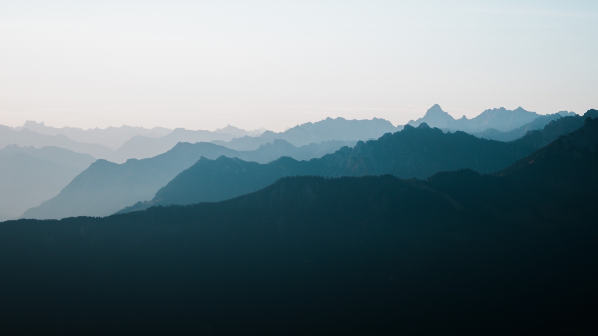
A Switzerland Field Guide
A Switzerland Field Guide
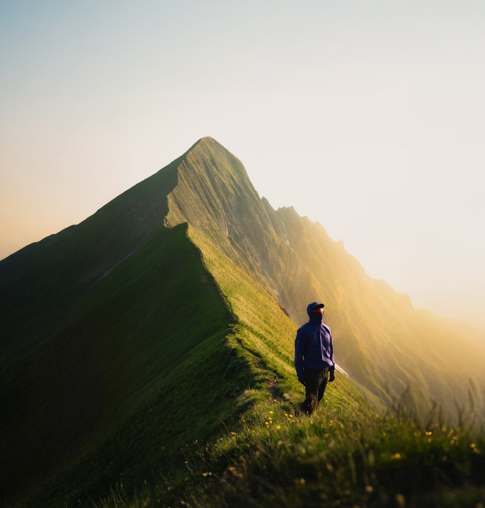
A NOTE BEFORE YOU START
The spots in this guide are not meant to become the next tourist magnets.
That is why it is better not to tag the exact location when posting on Instagram or TikTok. The more people share pins and names, the faster these places get crowded. Eventually they get ruined.
Basic respect for nature should go without saying: do not leave trash, do not start fires, do not damage anything just to get a better shot. If you see trash, take a second to pick it up.
Most of this is common sense. Still, it is worth repeating.
BEFORE YOU GO
Four things to figure out before you arrive. Keep it simple. The mountains reward preparation, not plans.
Hotels are expensive. Airbnbs, campsites, or a camper van are better options if you want freedom and save money.
You could spend months here and still miss things. But 2 to 4 weeks is enough to see a lot, especially if you focus on one region.
Solid hiking gear, warm layers (even in summer), and camping essentials if you plan to wild camp.
Trains work, but a rental car saves time and gives you access to more corners than you would reach otherwise.
WILD NIGHTS, QUIET MORNINGS
Wild camping in Switzerland is a bit of a grey area. Tolerated, usually, if you know the rules.
The general rule of thumb: it is allowed if you are above the treeline and not inside a Naturschutzgebiet (wildlife protection zone). Official rules vary by canton.
When we want the best light for photos or videos, we camp directly at the spot. That way we catch both sunset and sunrise. Set up late, leave early. Stay out of sight. No fires. No noise. Leave no trash behind.
If done right, no one notices and no damage is done. The goal is to be there and gone, leaving nothing but footprints and taking everything with you.
SIX REGIONS, ONE COUNTRY
Where to find each chapter. The regions are ordered roughly west to east, start with whichever your weather window suits.
THE CLASSICS
The famous spots that actually deliver. Go early, go off-season, or go after the day-trippers leave.
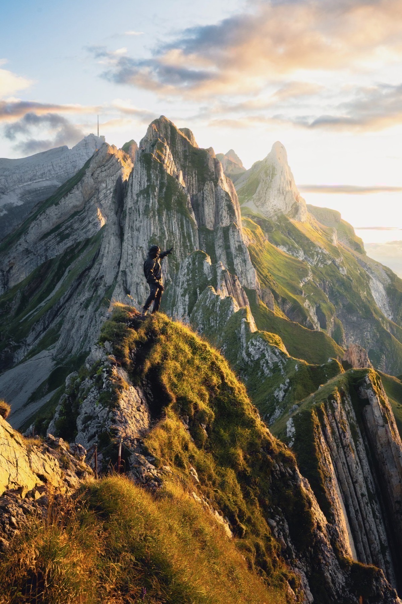
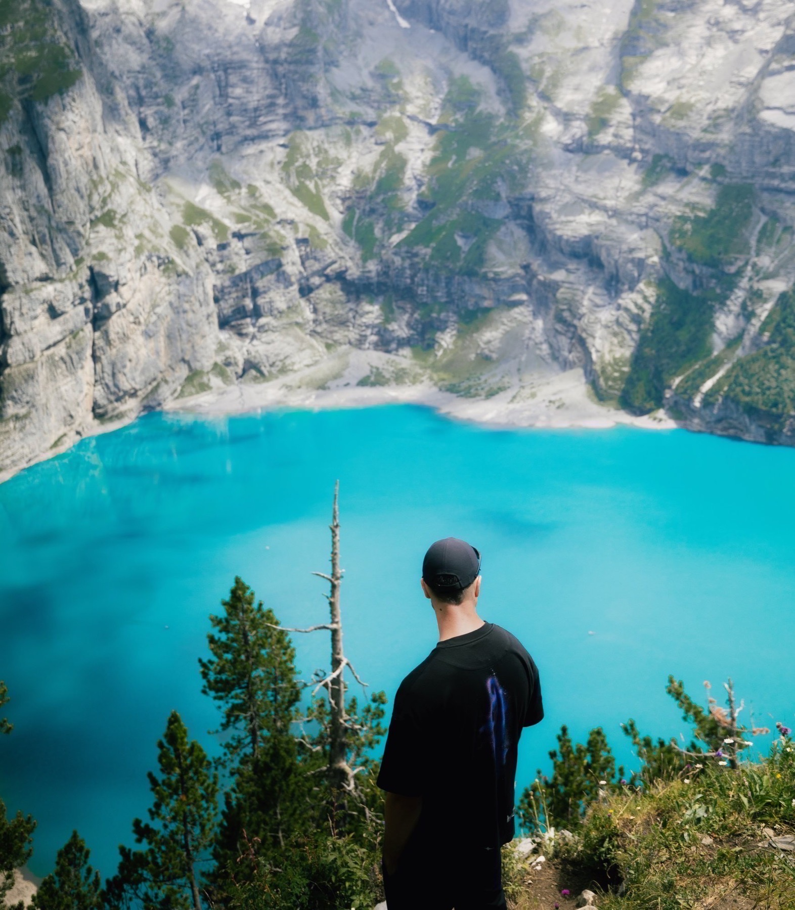
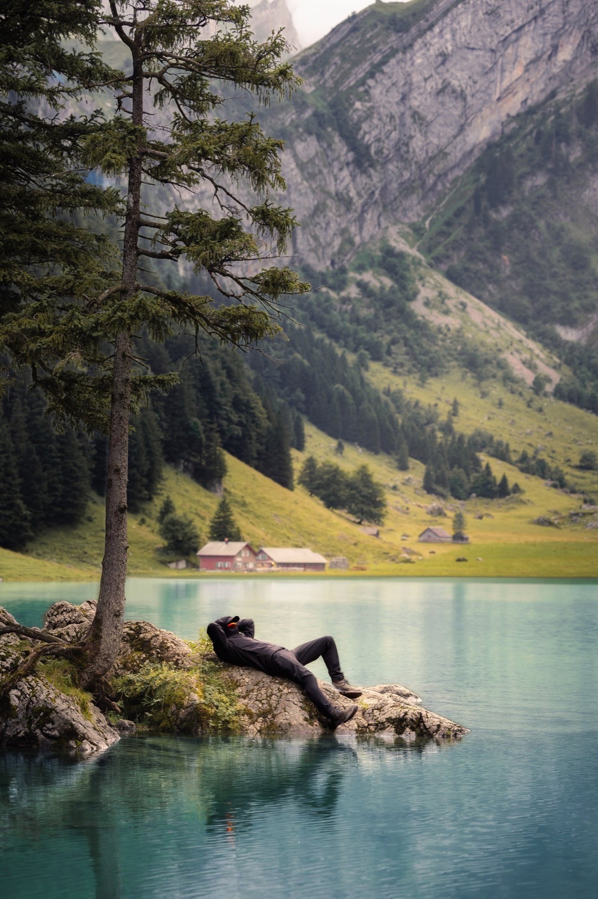
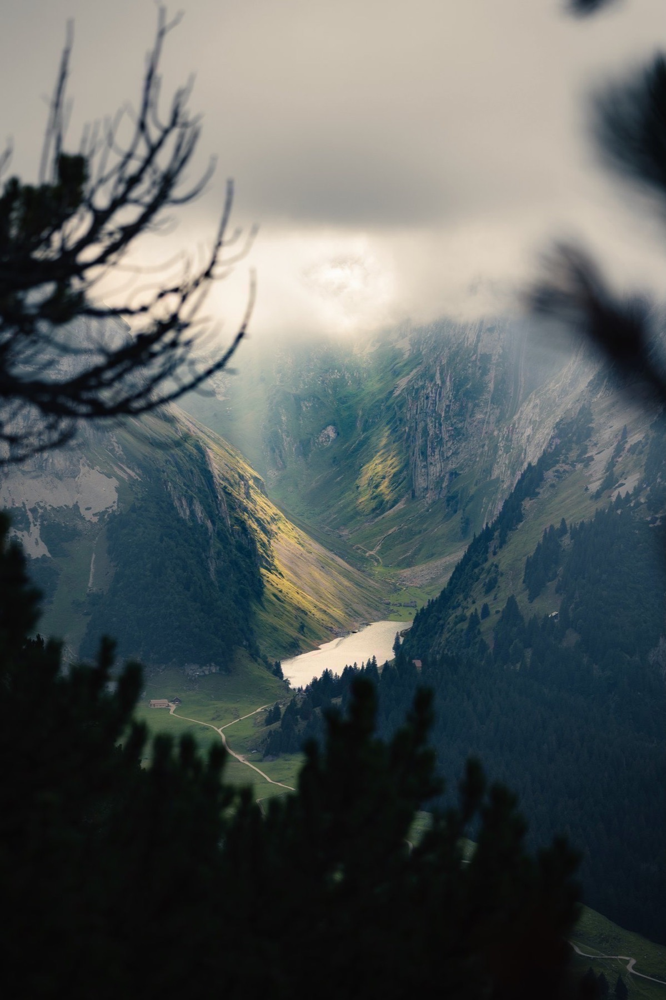
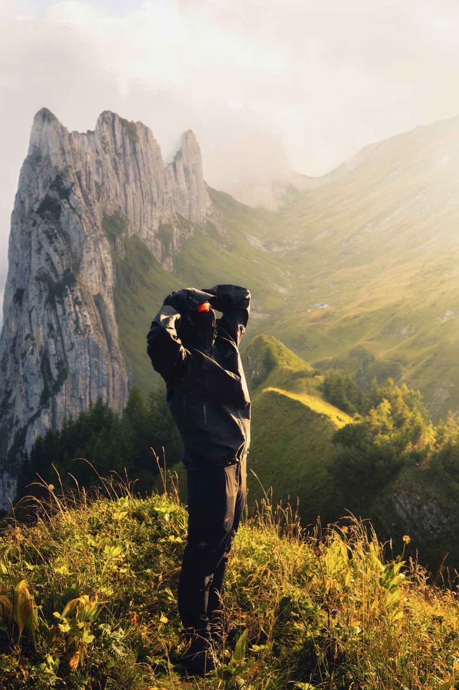
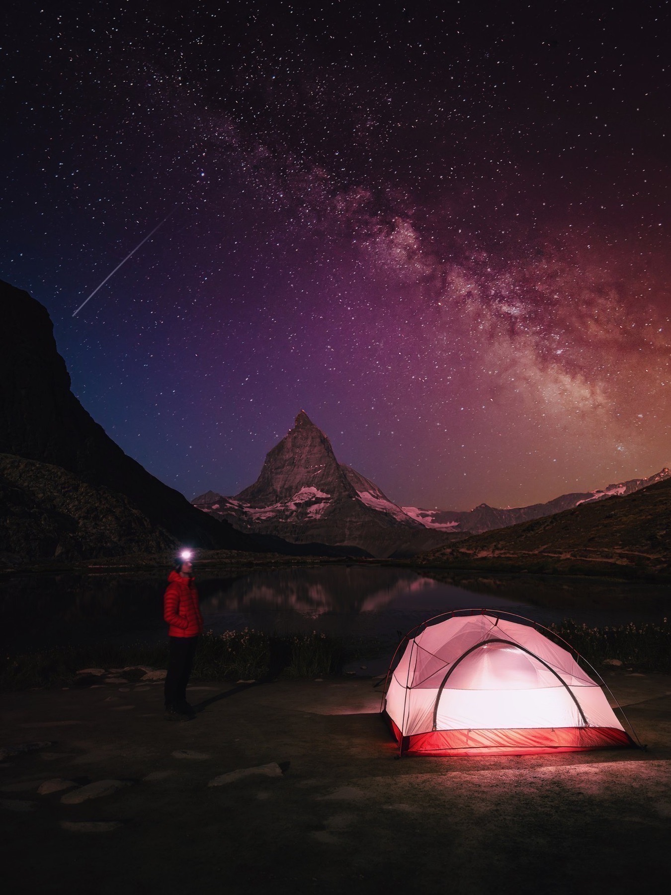
THE ONES I ACTUALLY WANT TO KEEP SECRET
The spots I would kick a friend for sharing. You are welcome.
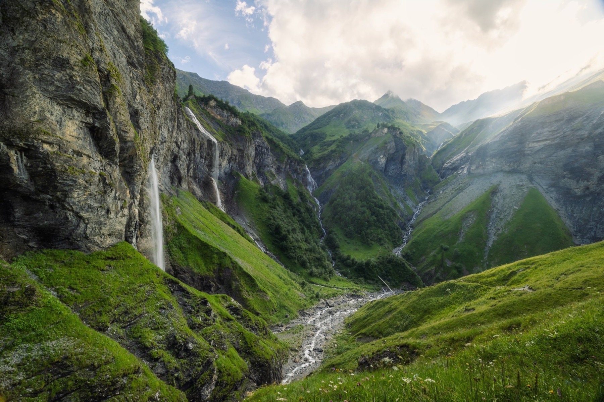
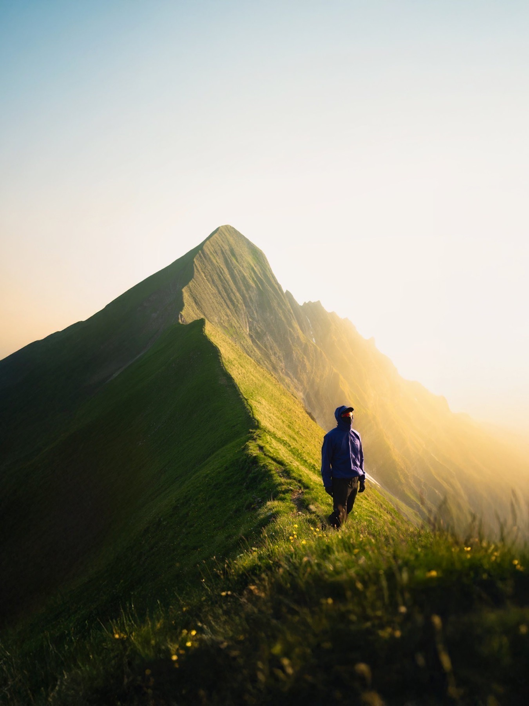
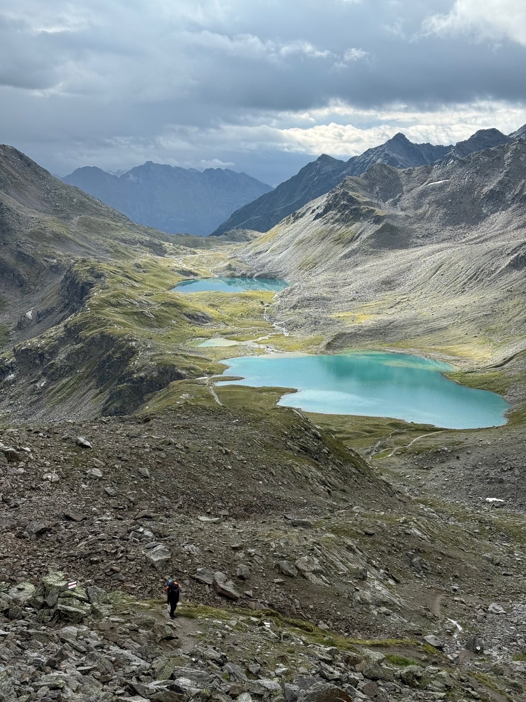
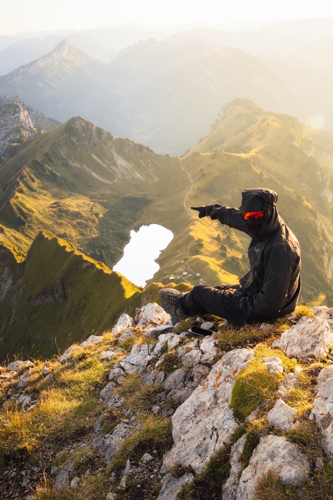
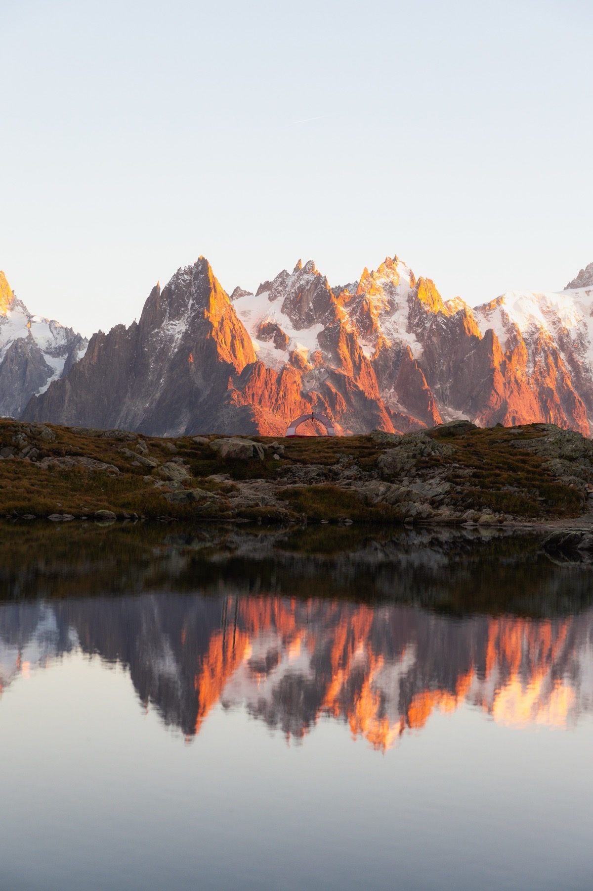
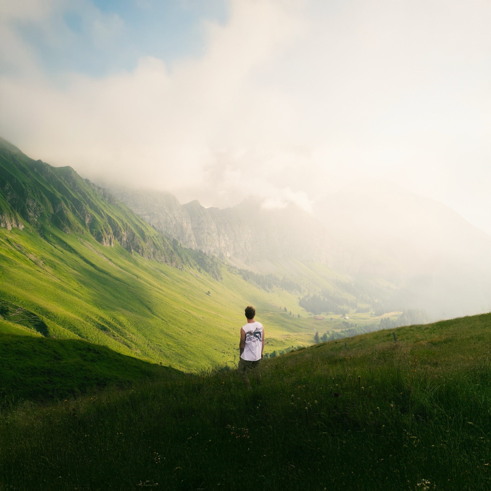